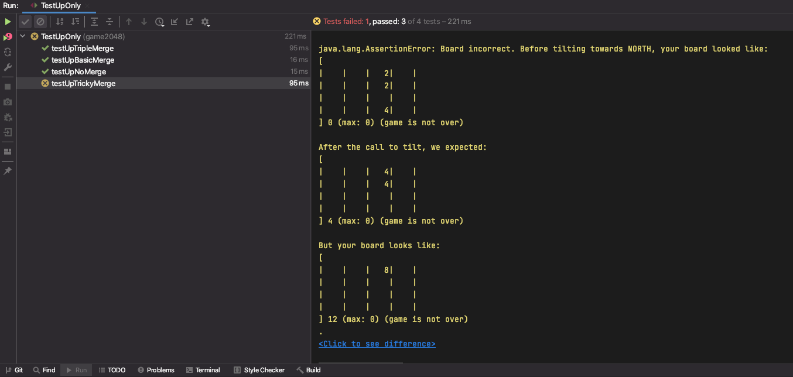

Project 0: 2048
Deadline: Friday, September 6, 11:59 PM PT.
FAQ
Each assignment will have an FAQ linked at the top. You can also access it by adding /faq to the end of the URL. The FAQ for Project 0 is located here.
Note that this project has limited submission tokens. Please see Submission and Grading for more details.
Overview
Prerequisites:
- Lab 1 (required for setup)
- HW0 (recommended, for Java syntax)
- Lectures 1-2
- 61B Style Guide (we are checking your style in autograder!)
- Lab 2 (optional but recommended prerequisite - helpful for debugging)
See here for a video overview of the project. This video is from an earlier version of the project, so there are some slight differences.
In this project, you’ll get some practice with Java by creating a playable game of 2048. We’ve already implemented the graphics and user interaction code for you, so your job is to implement the logic of the game.
If you’re not familiar with 2048, you can try out a demo at this link.
This project can seem daunting at first! There’s a lot of starter code that uses Java syntax that you might not have seen before, but it’ll be OK! In the real world, you’ll often work with codebases that you don’t fully understand, and will have to do some tinkering and experimentation to get the results you want. Don’t worry, when we get to Project 1, you’ll have a chance to start from scratch.
Using Git
It is important that you commit work to your repository at frequent intervals. Version control is a powerful tool for saving yourself when you mess something up or your dog eats your project, but you must use it regularly if it is to be of any use. Feel free to commit every 15 minutes; Git only saves what has changed, even though it acts as if it takes a snapshot of your entire project.
The command git status will tell you what files you have modified, removed, or possibly added since the last commit.
It will also tell you how much you have not yet sent to your GitHub repository.
The typical commands would look something like this:
git status # To see what needs to be added or committed.
git add <file or folder path> # To add, or stage, any modified files.
git commit -m "Commit message" # To commit changes. Use a descriptive message.
git push origin main # Reflect your local changes on GitHub so Gradescope can see them.
Then you can carry on working on the project until you’re ready to commit and push again, in which case you’ll repeat the above. It is in your best interest to get into the habit of comitting frequently with informative commit messages so that in the case that you need to revert back to an old version of code, it is not only possible, but easy. We suggest you commit every time you add a significant portion of code or reach some milestone (passing a new test, for example).
2048 Rules: Basic Rules
2048 is played on a grid of squares. Each square can either be empty, or contain a numbered tile.
The player chooses a direction (using the arrow keys) to tilt the board: north, south, east, or west. All tiles slide in that direction until there is no empty space left in the direction of motion.
As a tile slides, it can possibly merge with another tile with the same number. Each time two tiles merge to form a larger tile, the player earns the number of points on the new tile. You’ll implement this in Tasks 4-10.
One tile (with value 2 or 4) is randomly generated when the game begins. After each tilt, if the tilt did not change the board state, then no new tiles will be randomly generated. Otherwise, a single randomly generated tile will be added to the board on an empty square. Your code will not be adding any new tiles! We’ve already done this part for you.
The game ends when the current player has no available moves (no tilt can change the board), or a move forms a square containing 2048. You’ll implement this in Tasks 1-3.
Setup
Getting the Skeleton Files
Follow the instructions in the Assignment Workflow Guide to get the skeleton code and open it in IntelliJ. For this project, we will be working in the proj0/ directory.
If you get some sort of error, STOP and either figure it out by carefully reading the git WTFs or seek help at OH or Ed. You’ll save yourself a lot of trouble vs. guess-and-check with git commands. If you find yourself trying to use commands recommended by Google like force push, don’t. Don’t use
git push -f, even if a post you found on Stack Overflow says to do it!If you can’t get Git to work, watch this video as a last resort to submit your work.
File Structure
The proj0 folder is separated into two packages, game2048logic and game2048rendering. Though we won’t talk about them too much in 61B, packages are a way to organize code into different folders. For example, all the code for the graphics is in the game2048rendering package, and all the code for the game logic is in the game2048logic package. You can see this in the file structure below:
proj0
├── game2048logic
| ├── Model.java
├── game2048rendering
├── Board.java
... (some other files) ...
├── Main.java
├── Side.java
├── Tile.java
For the entirety of this project, you will only need to modify the
game2048logic/Model.javafile. Changes to other files will not be recognized by Gradescope.You will, however, need to look through and use (but not modify!) some of the methods in the other files. We will provide descriptions of these methods in the spec.
Running the Game
You can run your game by running the Main.java file in the game2048rendering package. You can do this by right-clicking the file and selecting “Run ‘Main.main()’”:

If everything is set up properly, you should get something like the following image:
Right now, your game does nothing, but by the end of this project, you’ll have a fully functioning 2048 implementation!
Task 1: Empty Space Exists
In Model.java, fill in the emptySpaceExists() method. (Don’t modify any other files.)
This method should return true if any of the tiles on the board are null.
Starter code: Board coordinates
Our implementation uses xy-coordinates with (0, 0) at the bottom-left corner:

Starter code: Board class
The Board class represents a board of tiles.
The private keyword means that you won’t be able to directly access the instance variables of the Board class. You will only be able to access public methods and variables from Model. (More on these keywords, and why it’s useful, later in the class.)
To interact with a Board object in Task 1, you will need to use the size() and tile(int x, int y) methods. These methods are documented in Board.java.
Starter code: Tile class
The Tile class represents a numbered tile on the board.
If a variable of type Tile is null, this represents an empty tile on the board. To check if a Tile t is null, you may use the expression if (t == null) {...}
To interact with a Tile object, you will need to use the value() method, which returns the numerical value of the given tile.
Example of syntax: If t is a variable of type Tile, representing a tile with value 8, then t.value() will return 8.
If you try to call
value()on aTileobject that isnull, you will get aNullPointerException. You can avoid this by checking if the tile isnullbefore callingvalue()on it.
Testing and Debugging
To test your method, run the tests in TestTask1.java by right-clicking the file and selecting “Run ‘TestTask1’”:
(You can also run all the tests in the entire folder by right-clicking game2048logic > “Run ‘Tests in ‘game2048logic’’”.)
Alternatively, you may open the TestTask1.java file and click the green arrow next to public class TestTask1 to run the tests (yours may look a little different):

You may also run individual tests in the same manner.
You will run all tests in the same way for the rest of the project (and course!).
If your implementation is correct, all tests should pass.
Here is what the error message would look like if you failed one of the tests:

On the left-hand side, you’ll see the list of all tests that were run. The yellow X means we failed a test while the
green check means we passed it. On the right, you’ll see some useful error messages. To look at a single test and its
error message in isolation, click the test on the left-hand side. For example, let’s say we want to look at
the testCompletelyEmpty test.

The right-hand side is now the isolated error message for this test. The top line has a useful
message: "Board is full of empty space" followed by a String representation of the board. You’ll see that it’s clearly
empty, yet our emptySpaceExists method is returning false and causing this test to fail. The javadoc comment at the
top of the code for the test also has some useful information in case you’re failing a test. You can click on the text underlined in blue to see the contents of the test.
Task 2: Max Tile Exists
In Model.java, fill in the maxTileExists() method. (Don’t modify any other files.)
This method should return true if any of the tiles on the board have the winning value (default 2048).
Note: Instead of hard-coding the constant 2048 in your code, you should use the variable MAX_PIECE (already defined for you). For example, you should write if (x == MAX_PIECE) instead of if (x == 2048).
Leaving in hard coded numbers like 2048 is a bad programming practice, sometimes referred to as a “magic number”. The danger of such magic numbers is that if you change them in one part of your code but not another, you might get unexpected results. By using a variable like MAX_PIECE, you can ensure they all get changed together.
Testing and Debugging
To test your method, run the tests in TestTask2.java. If your implementation is correct, all tests should pass.
Task 3: At Least One Move Exists
In Model.java, fill in the atLeastOneMoveExists() method. (Don’t modify any other files.)
This method should return true if there are any valid moves. A valid move exists if there is a button (up, down, left, right) that the player can press that would cause at least one tile to move.
There are two ways a valid move can exist:
- There is at least one empty space on the board.
- There are two adjacent (there can be empty space between them) tiles with the same value.
For example, for the board below, we should return true because there is at least one empty space.
| 2| | 2| |
| 4| 4| 2| 2|
| | 4| | |
| 2| 4| 4| 8|
For the board below, we should return false. No matter what button you press in 2048, nothing will happen, i.e. there are no two adjacent tiles with equal values.
| 2| 4| 2| 4|
| 16| 2| 4| 2|
| 2| 4| 2| 4|
| 4| 2| 4| 2|
For the board below, we would return true since a move to the right or left would merge the two 64 tiles, and also a move up or down would merge the 32 tiles. Or in other words, there exist at least two adjacent tiles with equal values.
| 2| 4| 64| 64|
| 16| 2| 4| 8|
| 2| 4| 2| 32|
| 4| 2| 4| 32|
Testing and Debugging
To test your method, run the tests in TestTask3.java. If your implementation is correct, all tests should pass.
Since the atLeastOneMoveExists method depends on the emptySpaceExists method, you shouldn’t expect to pass these tests until you are passing all of the tests in TestTask1.java.
Checkpoint
Once you have maxTileExists and atLeastOneMoveExists working, you should also be passing all the tests in TestCheckpoint.java.
This file checks the correctness of the gameOver method, which depends on atLeastOneMoveExists and emptySpaceExists.
Testing and Debugging
One common error that you might encounter is an ArrayIndexOutOfBoundsException. Here is what an ArrayIndexOutOfBoundsException error message might look like:
ArrayIndexOutOfBoundsExceptions occur when we attempt to access a value at an illegal index. For example, the array arr = [4, 2, 2, 4] has legal indexes 0, 1, 2, and 3. Attempting to access arr[4] or arr[-1] would throw an ArrayIndexOutOfBoundsException.
We can evaluate where an ArrayIndexOutOfBoundsException is happening in our code by examining the stack trace provided in the test output. Taking a closer look at the previous example:
The stack trace shows us which lines of code were executed leading up to the error, with the top line being the most recent. The line at game2048rendering.Board.vtile(Board.java:53) tells us a few things about our error. First, we can see that our ArrayIndexOutOfBoundsException was triggered in the game2048rendering.Board class, within the vtile method. Board.java:53 specifies that line 53 triggered the error. This was called by line 59 in the tile method, and so on.
The stack trace is a useful starting place for debugging. You can click on the blue underlined section of the stack trace to jump directly to that line of code.
Task 4: Understanding Tilts
Now, it’s time to implement the logic for tilting the board. We recommend finishing Tasks 1-3 before reading any further in the spec!
See here for a video introduction to this task.
Rules: Tilting

The animation above shows a few tilt operations. Here are the full rules for when merges occur that are shown in the image above.
-
Two tiles of the same value merge into one tile containing double the initial number.
-
A tile that is the result of a merge will not merge again on that tilt. For example, if we have [X, 2, 2, 4], where X represents an empty space, and we move the tiles to the left, we should end up with [4, 4, X, X], not [8, X, X, X]. This is because the leftmost 4 was already part of a merge so it should not merge again.
-
When three adjacent tiles in the direction of motion have the same number, then the leading two tiles in the direction of motion merge, and the trailing tile does not. For example, if we have [X, 2, 2, 2] and move tiles left, we should end up with [4, 2, X, X] not [2, 4, X, X].
As a corollary of these rules, if there are four adjacent tiles with the same number in the direction of motion, they form two merged tiles. For example, if we have [4, 4, 4, 4], then if we move to the left, we end up with [8, 8, X, X]. This is because the leading two tiles will be merged as a result of rule 3, then the trailing two tiles will be merged, but because of rule 2 these merged tiles (8 in our example) will not merge themselves on that tilt.
You’ll find applications of each of the 3 rules listed above in the animated GIF above, so watch through it a few times to get a good understanding of these rules.
Tilting Rules Quiz
Your task: complete this optional Google Form quiz to check your understanding of the tilting rules.
This quiz is not part of your 61B course grade.
Implementing Tilts
Implementing tilts is surprisingly challenging. We have to account for the score updating, four different possible directions, three different merging rules, etc.
Computer science is essentially about one thing: Managing complexity. In order to implement this complicated functionality, we need to break the problem into smaller pieces and tackle them one at a time.
In future assignments, it’ll be your job to figure out how to break problems into smaller pieces. For this project, here’s an outline of how we’ve decided to tackle the tilt problem:
-
Score updating: This will be easier once we have the logic for moving all the tiles, so let’s save this for later (Task 10).
-
Four directions: Instead of worrying about tilting in all four directions at once, let’s start with just the up direction. Later, in Task 9, we’ll show you a clever trick to generalize your code and deal with the other three directions with just two extra lines of code.
-
Key observation: When you tilt the board up, each of the four columns can be processed independently. The tiles in one column have no effect on the tiles in a different column. Inspired by this observation, we’ll write a helper method for tilting one column. Then, to tilt the entire board up (Task 8), we’ll call that helper method to tilt each of the columns, one by one.
-
Another key observation: When you tilt a column up, we need to compute the final landing squares for each tile in that column. We could do this all in a single method, but that’s going to get complicated quickly. Instead, let’s write another helper method for moving a single tile. Then, to tilt the entire column (Task 7), we’ll call that helper method to move each tile, one by one.
-
Merging rules: Before we even deal with merging, let’s try to implement tiles tilting up. Then, once the tiles are properly tilting up, we can add logic to implement merging (Task 6).
Task 5: Move Tile Up (No Merging)
In Model.java, fill in the moveTileUpAsFarAsPossible(int x, int y) method. (Don’t modify any other files.)
This method should move the tile at position (x, y) as far up in its column as possible.
Remember that a tile can move up through empty squares, until the tile either reaches the top row, or the tile reaches an empty square with another tile directly above it.
For this task, don’t worry about merges yet. We’ll add logic for merging in the next task.
Starter code: move method in Board
In the Board class, there is a method move(int x, int y, Tile tile). This method moves the given tile to the given (x, y) position on the board.
In order to make the graphics run smoothly, you should only call move on a given tile once per call to tilt. In other words, your solution to moveTileUpAsFarAsPossible should only call the move method exactly once.
As an example, suppose you have the board below and press up.
| | | | |
| | | | |
| | | | |
| | | | 2|
One way we could accomplish this would be as follows:
Tile t = board.tile(3, 0);
board.move(3, 1, t);
board.move(3, 2, t);
board.move(3, 3, t);
However, the graphics code will get confused because the same tile is not supposed to move multiple times. Instead, you’ll need to
complete the entire move with one call to move, e.g.
Tile t = board.tile(3, 0);
board.move(3, 3, t);
If the (x, y) position already contains another tile with the same value, then the move method will merge the two tiles and update the value accordingly.
As an example, suppose you have the board below and press up.
| | | | 2|
| | | | |
| | | | |
| | | | 2|
You can generate the correct resulting board with the following code, which will merge the tiles and create a new tile with value 4:
Tile t = board.tile(3, 0);
board.move(3, 3, t);
If the (x, y) position already contains another tile with a different value, then the program will crash. You can’t move a tile into a square containing another tile with a different value. Moving a tile into its current position will do nothing.
Moving Rules Quiz
To test your understanding, you should complete this Google Form quiz. This quiz (and the following quizzes) are completely optional (i.e. not graded) but highly suggested as it’ll find any conceptual misunderstandings you might have about the game mechanics. You may attempt this quiz as many times as you’d like.
Testing and Debugging
To test your method, run the tests in TestTask5.java. If your implementation is correct, all tests should pass.
If your code crashes with a message like this:
java.lang.NullPointerException: Cannot invoke "game2048rendering.Tile.value()" because the return value of "game2048logic.Model.tile(int, int)" is null
This probably means that you’re trying to call move on a null tile. You can’t move a non-existent tile, so the program crashes. Here’s an example of moving a non-existent tile (you shouldn’t do this):
Tile t = null;
board.move(2, 3, t);
You can use the stack trace to figure out which line of code caused the program to crash.
Task 6: Merging Tiles
Modify the moveTileUpAsFarAsPossible method so that it accounts for tiles merging.
Remember that a tile can move up through empty squares. When the tile sees a non-empty square, if that square contains another tile of the same value, and that tile has not already been merged from this tilt, then the two tiles should merge.
Starter code: wasMerged method in Tile
One tricky problem with merging is Rule 2:
A tile that is the result of a merge will not merge again on that tilt. For example, if we have [X, 2, 2, 4], where X represents an empty space, and we move the tiles to the left, we should end up with [4, 4, X, X], not [8, X, X, X]. This is because the leftmost 4 was already part of a merge so it should not merge again.
What if, halfway through this tilt operation, we have [4, X, X, 4], and we want to call moveTileUpAsFarAsPossible to move the rightmost 4 tile toward the left? We have to know whether or not the leftmost 4 tile was previously merged on this tilt (as is the case here), or if the leftmost 4 tile is still eligible for a merge (in which case the 4s would merge into an 8).
To keep track of whether a tile has been merged on this tilt, you can use the wasMerged method of the Tile class. Don’t worry, if the merge was successful, move method automatically updates the value.
Testing and Debugging
To test your method, run the tests in TestTask6.java. If your implementation is correct, all tests should pass.
Task 7: Tilt Column
Now that we have a helper method that moves a single tile into its rightful place (including merges), our method for tilting an entire column will be a lot simpler!
In Model.java, fill in the tiltColumn(int x) method. (Don’t modify any other files.)
This method should tilt the given column at coordinate x up, moving all of the tiles in that column into their rightful place, and merging any tiles in that column that need to be merged.
Remember to use your moveTileUpAsFarAsPossible helper method to keep things simple! Consider: What tiles should you call this helper method on, and in what order?
Testing and Debugging
To test your method, run the tests in TestTask7.java. If your implementation is correct, all tests should pass.
Task 8: Tilt Up
Again, your helper method from the previous task should make this task a lot simpler. That’s the power of breaking up this big problem into smaller helper methods!
In Model.java, fill in the tilt(Side side) method. (Don’t modify any other files.)
This method should tilt the entire board up, moving all tiles in all columns into their rightful place, and merging any tiles that need to be merged.
For this task, you can ignore the side argument. We’ll use that in the next task to deal with the other three tilt directions.
Testing and Debugging
To test your method, run the tests in TestTask8.java. If your implementation is correct, all tests should pass.
Task 9: Tilt in Four Directions
Now that we’ve gotten tilt working for the up direction, we have to do the same thing for the other three directions.
One possible approach is to copy-paste our code four times, and slightly change a few lines to handle the other three directions. This leads to messy, hard-to-read code, with ample opportunity to introduce obscure bugs. What if you fix something in one copy, but not the other three copies?
For this problem, we’ve given away a clean solution. This will allow you to handle the other three directions with only two additional lines of code!
Starter code: Side
The Side class is a special type of class called an Enum.
Enums may take on only one of a finite set of values. In this case, we have a value for each of the 4 sides: NORTH, SOUTH, EAST, and WEST. You will not need to use any of the methods of this class nor manipulate the instance variables.
Enums can be assigned with syntax like Side s = Side.NORTH. Note that rather than using the new keyword, we simply set the Side value equal to one of the four values. Similarly if we have a function like public static void printSide(Side s), we can call this function as follows: printSide(Side.NORTH), which will pass the value NORTH to the function.
If you’re curious to learn more about Java enums, see https://docs.oracle.com/javase/tutorial/java/javaOO/enum.html .
Starter code: setViewingPerspective method in Board
Specifically, the Board class has a setViewingPerspective(Side s) function that will change the behavior of the tile and move classes so that they behave as if the given side was NORTH.
For example, consider the board below:
| | | | |
| 16| | 16| |
| | | | |
| | | | 2|
If we call board.tile(0, 2), we’ll get 16, since 16 is in column 0, row 2. If we call
board.setViewingPerspective(s) where s is WEST, then the board will behave as if WEST was NORTH, i.e. you had your
head turned 90 degrees to the left, as shown below:
| | | 16| |
| | | | |
| | | 16| |
| 2| | | |
In other words, the 16 we had before would be at board.tile(2, 3). If we were to call
board.tilt(Side.NORTH) with a properly implemented tilt, the board would become:
| 2| | 32| |
| | | | |
| | | | |
| | | | |
To get the board to go back to the original viewing perspective, we simply call
board.setViewingPerspective(Side.NORTH), which will make the board behave as if
NORTH was NORTH. If we do this, the board will now behave as if it were:
| | | | |
| 32| | | |
| | | | |
| 2| | | |
Observe that this is the same thing as if you’d slid the tiles of the original board to the WEST.
Important: Make sure to use board.setViewingPerspective to set the perspective back to Side.NORTH
before you finish your call to tilt, otherwise weird stuff will happen.
To test your understanding, try this third and final Google Form quiz . You may attempt this quiz as many times as you’d like.
Testing and Debugging
To test your method, run the tests in TestTask9.java. If your implementation is correct, all tests should pass.
The error messages for these are different, so let’s look at one. Say we run all the tests, notice we’re failing the “Limit Merging” (testUpTrickyMerge) test. After clicking that test, we’ll see this:

The first line tells us the direction that was tilted (for these tests it’ll always be North), then what your board looked like before the tilt, then what we expected the board to look like, and finally what your board actually looked like.
You’ll see that we’re merging a tile twice on a single call to tilt which results in a single tile with value 8 instead of two tiles both with value 4. As a result, our score is also incorrect as you can see in the bottom of the representation of the board.
For other tests it might be difficult to notice the difference between the expected and actual boards right away; for those, you can click the blue “Click to see difference” text at the very bottom of the error message to get a side-by-side comparison of the expected (on the left) and actual (on the right) boards in a separate window. Here is what it looks like for this test:
Debugging these can be a bit tricky because it’s hard to tell what you’re doing wrong. First, you should identify which of the 3 rules listed above you’re violating. In this case, we can see that it’s rule 2 since a tile is merging more than once. The javadoc comments on these methods are good resources for this as they specifically lay out what rule/configuration they’re testing. You might also be able to figure out what rule you’re violating by just looking at the before and after boards. Then, comes the tricky party: refactoring your existing code to properly account for that rule. We suggest writing out on pen and paper the steps your code takes so you can first understand why your board looks the way it does, then coming up with a fix. These tests only call tilt once, so you don’t need to worry about debugging multiple calls to tilt.
We recommend using the given tests to debug your code, though you’re also welcome to debug by running Main.java. You can also start the game from a specific state by changing the CUSTOM_START and USE_CUSTOM_START variables in Main.java, which may be helpful for debugging specific tests.
Task 10: Updating Score
At this point, your game should be able to tilt the board in all four directions, accounting for merges. The last thing we have to implement is the score updating.
Rules: Score
When two tiles of value v merge to form a single value of tile 2v, the player’s score increases by 2v.
For example, if we have the board given by:
| 2| | 2| |
| 4| 4| 2| 2|
| | 4| | |
| 2| 4| 4| 8|
And press up, the state of the game is now:
| 2| 8| 4| 2|
| 4| 4| 4| 8|
| 2| | | |
| | | | |
We merged two 4s into an 8, and two 2s into a 4, so the score should be incremented by 8 + 4 = 12.
Starter code: score instance variable in Model
The Model class has an instance variable score that keeps track of the player’s score. Modify this when updating the score of the game.
Testing and Debugging
At this point, your 2048 implementation should be complete! You should now be passing all of the tests in every testing file.
Testing files such as TestIntegration test all the things you write in coordination with each other. Such a test is called an integration test and is incredibly important in testing. While unit tests run things in isolation, integration tests run things all together and are designed to catch obscure bugs that occur as a result of the interaction between different functions you’ve written. Do not attempt to debug TestIntegration until you’re passing the rest of the tests!
If you’re failing the following tests (click each test to see the input and buggy output):
"Non-merged tilts for N = 1, 2, 3" in TestNbyN
Input:
| 4| | 4|
| 2| 16| 2|
| | | 8|
Buggy output:
| | | 8|
| 4| | 4|
| 2| 16| 8|
"Multiple moves" in TestMultipleMoves
Input:
| | | | 4|
| | | | 2|
| | | | 2|
| | | 4| |
Buggy output:
| | | 4| 4|
| | | | 4|
| | | | 4|
| | | | |
"Multiple Moves 2" in TestMultipleMoves
Input:
| | 4| 4| 4|
| | | | 8|
| | | | 16|
| 4| | | |
Buggy output:
| 4| 4| 4| 4|
| | | | 16|
| | | | 32|
| | | | |
This probably means that you’re calling move on a tile that does not need to be moved. In other words, you’re trying move a tile into its current location. Here’s an example of moving a tile into its current location (you shouldn’t do this):
Tile t = board.tile(2, 3);
board.move(2, 3, t);
This causes the move method to think that we need to merge the tile with itself to create a tile with double the value. (This is why the buggy output has some tiles in the correct place, but with double the value.)
To fix this bug, make sure that your code never calls move when the tile isn’t actually moving. For example, you could add an if statement before each call to move, checking that you aren’t moving the tile into its current location.
Style
Starting with this project, we will be enforcing style. You must follow the style guide, or you will be penalized on the autograder.
You can and should check your style locally with the CS 61B plugin. We will not remove the velocity limit for failing to check style.
Submission and Grading
We will not remove the velocity limit for failing to submit the correct files because you didn’t add, commit, or push. You have been warned.
Velocity Limiting
For this project we will be limiting the number of times you can submit your code to the autograder. You will get 4 submission “tokens” that each regenerate after 24 hours.
Grading Overview
Your code will be graded based on whether it passes the tests we provided. There are no hidden tests; the score you see on Gradescope is your score for this project.
Gradescope will only grade your Model.java file. If you edit any other files, your edits will not be recognized, so don’t edit any other files.
Tests are “all or nothing” in their own fields. If you fail one of the subtests in the test category, you will not receive credit for that category although you might have passed different test cases. For example, you’ll see in Gradescope TestModel category 5 subtests.
Here is a breakdown of what percent you’d earn on this project with varying levels of completing:
TestTask1: 5%TestTask2: 5%TestTask3: 5%TestCheckpoint: 5%TestTask5: 10%TestTask6: 10%TestTask7: 10%TestTask8: 10%TestTask9: 10%TestTask10: 10%TestIntegration: 20%
Once you’ve pushed your code to GitHub (i.e. ran git push), then you may go to Gradescope, find the proj0 assignment, and submit the code there. Keep in mind that the version of code that Gradescope uses is the most recent commit you’ve pushed, so if you do not run git push before you submit on Gradescope, old code will be tested instead of the most recent code you have on your computer.
There are no hidden tests. The score you see on Gradescope is your score for this project.